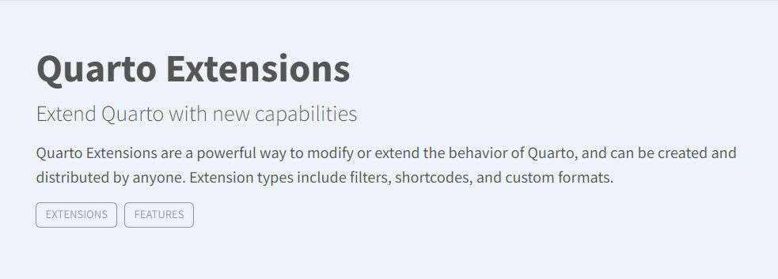
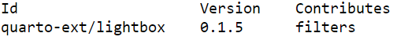

Code
Terminal
quarto install extension quarto-ext/lightboxwith Revealjs
Tony Duan

Extensions are a powerful way to modify and extend the behavior of Quarto. Quarto v1.2 Required for Quarto Extensions.
An extension that uses the GLightbox javascript library to add lightbox styling and behavior to images in your HTML documents.
Terminal
quarto install extension quarto-ext/lightboxThe Lightbox extension can automatically give images in your web page a lightbox treatment. You can enable this like:
in header yaml:
In addition to simply providing a lightbox treatment for individual images, you can also group images into a ‘gallery’. When the user activates the lightbox, they will be able to page through the images in the gallery without returning to the main document.
in content:
code:example.qmd
website:example.qmd.
go to folder which have added quarto extension
Terminal
quarto list extensions
Terminal
quarto update quarto-ext/fontawesomeTerminal
quarto remove quarto-ext/fontawesomeIf you run the quarto remove extension command with no extension-id, you will be presented with a list of extensions that are present and you may select which extensions to remove.
https://quarto.org/docs/extensions/
https://github.com/quarto-ext/lightbox
---
title: "quarto Extensioins"
subtitle: "with Revealjs"
author: "Tony Duan"
execute:
warning: false
error: false
eval: false
format:
html:
toc: true
toc-location: right
code-fold: show
code-tools: true
number-sections: true
code-block-bg: true
code-block-border-left: "#31BAE9"
code-copy: true
---
{width="650"}
Extensions are a powerful way to modify and extend the behavior of Quarto. Quarto v1.2 Required for Quarto Extensions.
# quarto extension： lightbox
An extension that uses the GLightbox javascript library to add lightbox styling and behavior to images in your HTML documents.
# Installation:
```{bach filename="Terminal"}
quarto install extension quarto-ext/lightbox
```
# Usage:
The Lightbox extension can automatically give images in your web page a lightbox treatment. You can enable this like:
in header yaml:
```{r}
#| eval: false
---
title: Simple Lightbox Example
filters:
- lightbox
lightbox: auto
---
```
In addition to simply providing a lightbox treatment for individual images, you can also group images into a 'gallery'. When the user activates the lightbox, they will be able to page through the images in the gallery without returning to the main document.
in content:
```{r}
#| eval: false
{group="my-gallery"
description="its a picture"}
```
# quarto extension lightbox example:
code:[example.qmd](https://github.com/quarto-ext/lightbox/blob/main/example.qmd)
website:[example.qmd](https://quarto-ext.github.io/lightbox/).
# list quarto extension
go to folder which have added quarto extension
```{bach filename="Terminal"}
quarto list extensions
```

# update quarto extension
```{bach filename="Terminal"}
quarto update quarto-ext/fontawesome
```
# remove quarto extension
```{bach filename="Terminal"}
quarto remove quarto-ext/fontawesome
```
If you run the quarto remove extension command with no extension-id, you will be presented with a list of extensions that are present and you may select which extensions to remove.
# Reference
https://quarto.org/docs/extensions/
https://github.com/quarto-ext/lightbox